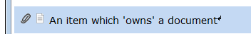
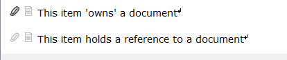

When using the operation Linnk!, a relationship between two documents is created: the newly created document will be 'owned' by the document, in which the Linnk! operation has been triggered. More precisely, the item, which was selected for the Linnk! operation, will 'own' the newly created document.

If this item is cut & pasted into another document, the item will still 'own' the associated document.
However, if this item is copied & pasted into another document, the created copy will only hold a reference to the associated document. Items 'owning' a document and items holding a reference to a document can be distinguished by a slightly different paper clip symbol.
